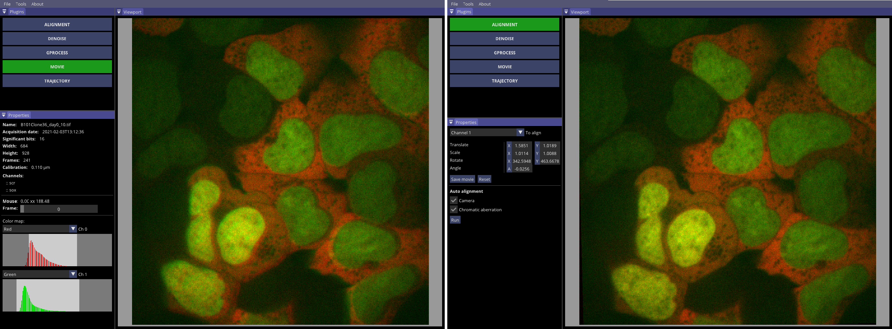

Alignment plugin
Even though channel alignment is not strictly necessary for inference of diffusion properties as fractional Brownian motion is orientation independent and chromatic aberration is negligible for short trajectories, it becomes relevant once we are interested in the average distance between spots. For that reason, GP-Tool includes a plugin that will attempt to calculate a matrix based on generic affine transformations that will match common shapes in both channels. In the left most of the following images, we present a movie in which the dual-camera setup was badly calibrated. On the right, we present the results of an automatic alignment. Differently, the user might setup parameters manually.
The plugin provides two types of auto-correction aiming for different types of errors. The first will combine translations and rotations in the attempt to correct a system with multiple badly calibrated cameras. Evidently, this type of correction is not necessary in the case of a setup with a single camera. On the other hand, any experimental protocol using multiple wavelengths is subjected to chromatic aberration. Its effect is not so relevant at image's center, but it might become non-negligible towards its edges.
Finally, the user might opt to save a new TIF-file with aligned channels. We can do that by clicking in button "Save movie".